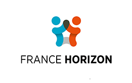

Choisissez une rubrique
Les cinq priorités à anticiper
- 1La couverture santéDans de nombreux cas, les droits à l'assurance maladie ne sont plus automatiquement ouverts après une expatriation. Vérifiez votre situation et déposez une demande de réouverture auprès de la CPAM dès votre arrivée.
- 2Collecter les documents avant de partirContrats de travail, bulletins de salaire, avis d'imposition locaux, carnets de vaccination des enfants, attestation CFE si concerné, actes d'état civil.
- 3La trésorerie de transitionDéménagement, dépôt de garantie, assurances, logement temporaire, frais administratifs — prévoir 2 à 3 mois de dépenses disponibles, sur un compte bancaire utilisable en France dès l'arrivée.
- 4Le logementSans fiches de paie françaises récentes, l'accès à la location peut être complexe. Anticipez Visale, garant, location meublée de transition.
- 5La situation du conjoint et des enfantsÀ traiter comme des sujets à part entière — emploi, séjour, couverture santé, scolarité.
Le retour en six étapes
- 1Six mois avant Fixer une date, estimer le budget, vérifier les contraintes de santé, identifier les démarches longues, examiner la situation fiscale de l'année du retour, anticiper les démarches de séjour du conjoint étranger.
- 2Trois mois avant Rassembler attestations, documents professionnels, scolaires et médicaux. Réserver le déménageur et donner congé du logement. Vérifier les formalités sociales européennes ou conventionnelles applicables.
- 3Un mois avant Finaliser le logement. Résilier les contrats locaux (énergie, téléphone, assurances) et prévenir l'école. Passer au consulat (radiation du registre, certificat de changement de résidence). Préparer les dossiers CPAM, CAF, banque, école, France Travail. Constituer un dossier papier et numérique unique.
- 4À l'arrivée Déposer le dossier assurance maladie, signaler le changement d'adresse, contacter la CAF, s'inscrire à France Travail si besoin, scolariser les enfants, valider le VLS-TS du conjoint étranger dans les 3 mois, s'inscrire sur les listes électorales de sa commune.
- 5Mois 1 à 3 Suivi des dossiers en instruction : santé, aides sociales, emploi, logement.
- 6Mois 3 à 6 Vérifier l'ouverture effective des droits, stabiliser la situation fiscale, consolider le projet professionnel — notamment pour le conjoint accompagnant.
Documents à préparer
Constituez un dossier unique — papier et numérique — avant de quitter votre pays de résidence. Ces pièces peuvent être difficiles à obtenir une fois rentré en France.
Identité et état civil
- Passeport et carte nationale d'identité
- Livret de famille, actes de naissance
- Actes transcrits sur les registres français si nécessaire
Travail et revenus
- Contrats de travail, certificats, bulletins de salaire, attestations de fin d'emploi
- Si retour des États-Unis : relevés Social Security, quitus fiscal américain
Fiscalité
- Avis d'imposition locaux des deux dernières années
- Justificatifs de revenus, informations sur les comptes bancaires détenus à l'étranger
Santé
- Carnets de vaccination (enfants et adultes)
- Ordonnances en cours, comptes rendus médicaux importants — demandez une copie de votre dossier médical avant de partir
- Attestation CFE ou justificatif de couverture étrangère
Scolarité, déménagement et animal
- Certificats de radiation scolaire, bulletins, traductions si nécessaire
- Certificat de changement de résidence (à demander au consulat)
- Inventaire estimatif des biens, carte grise du véhicule
- Documents vétérinaires et passeport de l'animal
- Documents de séjour du conjoint étranger
Prévenir le pays que vous quittez
- Administration fiscale locale : signalez votre départ et réglez votre dernière déclaration. Certains pays délivrent un certificat de situation fiscale (« quitus ») à demander avant de partir.
- Registre de population : dans les pays qui en ont un (par exemple l'Allemagne ou la Belgique), déclarez votre départ à la commune.
- Poste, banques, assurances, employeur : laissez votre future adresse et demandez si besoin le suivi de votre courrier ; certains organismes auront encore besoin de vous joindre après votre départ.
Au consulat avant de partir — et pour pouvoir voter
- Radiation du registre des Français établis hors de France : signalez votre départ au consulat ou en ligne. Elle entraîne en principe aussi votre radiation de la liste électorale consulaire.
- Inscription sur les listes électorales de votre commune dès l'arrivée, en ligne avec un justificatif de domicile. On ne peut pas être inscrit à la fois sur une liste consulaire et sur une liste communale : sans ces deux démarches, vous risquez de ne pas pouvoir voter.
- Certificat de changement de résidence : à demander au consulat, il sert pour la douane.
- Actes d'état civil : vérifiez que naissances et mariages survenus à l'étranger ont bien été transcrits, et faites reconnaître un éventuel divorce (voir la rubrique Famille).
Assurance maladie et protection sociale
Dans de nombreux cas, vos droits à l'assurance maladie ne sont plus automatiquement ouverts après une expatriation. Vérifiez votre situation et déposez une demande auprès de la CPAM via le formulaire S1106 dès votre arrivée.
Retour d'un pays UE / EEE / Suisse
La coordination européenne peut faciliter la reprise des droits. Vérifiez les modalités auprès de votre future CPAM.
Retour d'un pays hors UE
Pas de coordination européenne. Selon le pays, une convention bilatérale de sécurité sociale peut toutefois s'appliquer — vérifiez sur cleiss.fr. Le dossier CPAM est à constituer dès l'arrivée, avec l'ensemble des justificatifs requis.
Retour du Royaume-Uni
Depuis le Brexit, le Royaume-Uni n'est plus dans l'UE, mais l'accord de commerce et de coopération UE–Royaume-Uni maintient une coordination proche des règles européennes :
- Avec un emploi en France : affiliation immédiate, sans délai de carence.
- Retraité avec uniquement une pension britannique : vos soins en France sont pris en charge par le régime britannique (formulaire S1).
- Retraite : les périodes travaillées au Royaume-Uni comptent pour l'ouverture et le calcul de votre retraite française.
- Autres cas : prise en charge sous conditions, notamment de résidence stable en France.
Retour sans emploi — délai de résidence préalable
Toute personne pouvant justifier d'une résidence stable et effective en France a droit à la PUMA. Un délai de résidence préalable s'applique selon les cas — vérifiez votre situation auprès de votre CPAM ou sur ameli.fr.
La démarche passe par le dépôt du formulaire S1106 auprès de la CPAM, accompagné des justificatifs de domicile et d'identité. Ne tardez pas : les délais d'instruction peuvent être longs. Anticipez une couverture transitoire (maintien CFE ou mutuelle privée) pendant cette période.
Conseil pratique : remplissez le formulaire S1106 à l'ordinateur avant de l'imprimer. Les dossiers manuscrits illisibles peuvent entraîner des délais supplémentaires de traitement en CPAM.
Retour avec un emploi
L'exercice d'une activité professionnelle en France ouvre la prise en charge des frais de santé dès la première heure travaillée, sans délai de résidence préalable. Envoyez le formulaire S1106 à la CPAM avec votre contrat de travail ou un bulletin de salaire. Des conditions de durée de travail s'appliquent en revanche aux indemnités journalières (arrêt maladie, maternité) — vérifiez-les sur ameli.fr.
Vous êtes étudiant
Les étudiants inscrits dans un établissement d'enseignement en France sont en principe dispensés du délai de 3 mois de résidence : déposez le formulaire S1106 à la CPAM avec votre certificat de scolarité dès l'inscription.
Avant l'inscription dans l'enseignement supérieur, vous devez payer la CVEC (contribution de vie étudiante et de campus). Pensez aussi à une complémentaire santé.
Vous avez cotisé à la CFE
Les personnes affiliées à la CFE peuvent, selon leur situation, bénéficier d'une continuité temporaire de couverture au retour. Demandez une attestation avant le départ et vérifiez directement auprès de la CFE les modalités exactes de fin ou de relais de couverture.
Conjoint étranger non européen
La situation du conjoint suit une logique distincte : validation du VLS-TS, démarches de titre de séjour, ouverture des droits à part entière. Une couverture privée transitoire peut s'avérer nécessaire.
S'il s'installe en France pour la première fois, votre conjoint est en général reçu par l'OFII pour signer le contrat d'intégration républicaine : entretien, test de français et formation civique obligatoire de 24 heures. Si son niveau est inférieur à A2, une formation de français de 600 heures lui est prescrite.
Une fois vos droits ouverts
- Créez votre compte Ameli et commandez votre carte Vitale.
- Déclarez un médecin traitant : sans lui, vos soins sont moins bien remboursés.
- Si vous avez une maladie chronique, c'est ce médecin traitant qui demande la prise en charge à 100 % en ALD (affection de longue durée), en établissant un protocole de soins.
- Souscrivez une complémentaire santé (mutuelle), ou vérifiez si vous avez droit à la C2S.
Les règles d'ouverture des droits peuvent évoluer — vérifiez toujours la version en vigueur sur ameli.fr ou auprès de votre CPAM.
Emploi, chômage et projet professionnel
Conjoint ou partenaire accompagnant
Dans certaines situations, un conjoint accompagnant peut faire valoir des droits au chômage au retour, notamment lorsque la rupture d'emploi était liée au suivi du conjoint expatrié. Les conditions exactes doivent être vérifiées au cas par cas auprès de France Travail, en fonction de la durée écoulée, des justificatifs disponibles et de la situation antérieure.
Pièces fréquemment demandées dans ce cadre :
- Attestation employeur
- Lettre de démission mentionnant « pour suivi de conjoint »
- Justificatif de l'activité professionnelle du conjoint à l'étranger
Retour depuis un pays européen — formulaire U1
Le document portable U1 récapitule vos périodes d'emploi dans un autre pays de l'UE / EEE / Suisse. France Travail ne les prend en compte que si vous avez retravaillé en France après cette activité, et le montant de l'allocation est calculé sur les seuls salaires français. À demander avant le retour à l'organisme de chômage du pays quitté.
Si vous percevez encore une allocation chômage dans l'autre pays, le document U2 permet de continuer à la recevoir en France : inscrivez-vous à France Travail dans les 7 jours.
Royaume-Uni : vos périodes de travail britanniques restent prises en compte, mais il n'est plus possible de percevoir une allocation chômage britannique en France.
Vous touchiez le chômage en France avant de partir
Des droits ouverts avant le départ et non épuisés peuvent être repris au retour, tant que le délai de déchéance n'est pas dépassé : la durée d'indemnisation qui vous avait été notifiée, augmentée de 3 ans.
L'inscription à France Travail demande une adresse en France : vous pouvez chercher un emploi depuis l'étranger, mais vous ne pourrez vous inscrire qu'une fois installé.
Vous êtes indépendant ou chef d'entreprise
Une activité créée à l'étranger peut en général être poursuivie depuis la France, et une activité créée en France avant le départ peut être reprise. Vérifiez toutefois les règles propres aux professions réglementées (santé, droit, bâtiment…), qui peuvent exiger une nouvelle inscription, ainsi que vos obligations de déclaration auprès de l'Urssaf.
Fiscalité, comptes et finances
L'année du retour est une année fiscale particulière. Selon votre situation, la déclaration peut inclure :
- Formulaire 2042 — déclaration de revenus de droit commun
- Formulaire 2042-NR — revenus de source française perçus avant le retour (si vous étiez non-résident fiscal)
- Annexe 2047 — revenus encaissés à l'étranger pendant l'année du retour
Créez ou retrouvez votre espace particulier sur impots.gouv.fr : il sert à déclarer vos revenus, à signaler votre nouvelle adresse et à gérer le prélèvement à la source.
Points de vigilance
- Ne pas traiter l'année du retour comme une année fiscale ordinaire
- Prévenir l'administration fiscale du pays quitté de votre départ, et régler votre dernière déclaration sur place
- Déclarer les revenus étrangers perçus après la date de retour
- Déclarer les comptes bancaires étrangers (formulaire 3916) ouverts, utilisés ou clos — amende de 1 500 € par compte non déclaré et par année, portée à 10 000 € si le compte est situé dans un État non coopératif
- La CAF calcule la plupart des prestations familiales sur vos revenus d'il y a deux ans (N-2), transmis par les impôts : au retour, ces montants ne reflètent pas forcément votre situation. Signalez tout changement à votre Caf, qui peut alors revoir le calcul.
- Les conventions fiscales bilatérales peuvent modifier la règle générale selon le pays quitté — vérifiez auprès du service des impôts compétent ou du SIP NR en cas de doute
Votre compte bancaire en France
Prenez contact avec une banque française avant le retour : salaire, loyer, aides de la CAF et remboursements de santé seront versés sur un compte en France. Si vous avez gardé un compte pendant l'expatriation, signalez votre nouvelle adresse pour repasser au statut de résident.
À l'arrivée, plusieurs contrats (forfait de téléphone, énergie, location) peuvent vous demander un RIB français et un justificatif de domicile : ouvrir le compte avant le retour vous évite d'être bloqué. Si vous êtes hébergé, votre hébergeant vous fournit une attestation d'hébergement avec son propre justificatif de domicile.
En cas de refus d'ouverture de compte, la Banque de France peut désigner une banque obligée de vous ouvrir un compte avec les services bancaires de base gratuits : c'est le droit au compte.
Attention spécifique — Double nationalité franco-américaine
Les citoyens américains (y compris les binationaux franco-américains) sont tenus de déclarer leurs revenus mondiaux aux autorités fiscales américaines, quel que soit leur pays de résidence. Cela vaut aussi pour un conjoint ou partenaire américain qui s'installe en France avec vous. Pour son visa et son titre de séjour, il suit les mêmes règles que tout partenaire non européen. Cette obligation ne dépend pas de l'âge : elle s'applique dès que les revenus dépassent les seuils fixés par l'IRS, et tant que la nationalité américaine est conservée. S'y ajoute la déclaration des comptes financiers étrangers (FBAR). Consultez un conseiller fiscal qualifié avant et après le retour.
Retraite : l'accord de sécurité sociale France–États-Unis de 1987 permet de prendre en compte les périodes d'assurance des deux pays ; chaque pays calcule et verse ensuite sa propre pension.
Logement et installation
L'accès à la location repose souvent sur des preuves que les expatriés de retour n'ont pas immédiatement : bulletins de salaire français récents, avis d'imposition français. Solutions : garantie Visale (gratuite, à demander avant la signature du bail, ouverte aux moins de 30 ans et à certains salariés), garant personnel, location meublée de transition, dossier renforcé avec justificatifs étrangers traduits.
L'aide au logement (APL / ALS / ALF) est due à partir du mois suivant la demande : déposez la demande CAF dès l'entrée dans les lieux. Les ressources prises en compte sont celles des 12 derniers mois, y compris les revenus perçus à l'étranger, et sont actualisées tous les 3 mois.
Vos premières démarches de logement
- Hébergé chez un proche : il vous fournit une attestation d'hébergement sur l'honneur et une copie de son justificatif de domicile — c'est ce qui vous servira de justificatif pour vos démarches.
- Locataire ou propriétaire : souscrivez une assurance habitation et ouvrez vos contrats d'électricité et de gaz.
- Logement social : la demande se fait en ligne et doit être renouvelée chaque année. Déposez-la tôt, les délais d'attente peuvent être longs.
Vous rentrez en situation difficile
Si vous rentrez sans ressources ou sans solution de logement, adressez-vous dès l'arrivée au centre communal d'action sociale (CCAS) de la mairie ou aux services sociaux du département : ils peuvent vous orienter vers un hébergement et vous aider à ouvrir vos droits.
Avant le départ, le consulat peut, dans les situations les plus graves, organiser un rapatriement avec l'accord du ministère des Affaires étrangères. L'association France Horizon accueille et accompagne alors les personnes rapatriées.
Famille, conjoint, enfants
Vérifiez que les événements familiaux survenus à l'étranger — naissance, mariage, décès — ont bien été transcrits sur les registres d'état civil français. Une transcription manquante peut bloquer des démarches ultérieures.
Vous vous êtes mariés à l'étranger
Faites transcrire votre mariage sur les registres de l'état civil français. Ce n'est pas obligatoire, mais sans transcription le mariage n'a pas d'effet vis-à-vis des administrations :
- un conjoint étranger ne peut pas obtenir son visa ni son titre de séjour de conjoint de Français ;
- le couple ne peut pas faire de déclaration d'impôts commune ;
- vous n'obtenez pas de livret de famille français.
La demande se fait au consulat du lieu du mariage ou, pour certains pays (dont le Maroc, l'Algérie, la Tunisie et la Suisse), par courrier au Service central d'état civil de Nantes (SCEC). Comptez de quelques semaines à plusieurs mois : lancez-la bien avant le retour.
Vous vous êtes pacsés ou avez conclu un partenariat à l'étranger
- PACS signé au consulat de France : il est déjà enregistré et mentionné en marge de l'acte de naissance de chaque partenaire (pour un partenaire étranger né à l'étranger, dans le registre du Service central d'état civil de Nantes). Rien n'est à refaire au retour. Gardez le récépissé remis par le consulat : avec un extrait d'acte de naissance à jour, il prouve votre PACS. Une éventuelle dissolution se déclare auprès du consulat qui l'a enregistré, où que vous viviez.
- Partenariat enregistré selon le droit d'un autre pays (« civil partnership », « domestic partnership »…) : ce n'est pas un PACS français. Sa formation, ses effets et sa dissolution restent régis par le droit du pays où il a été enregistré (article 515-7-1 du Code civil). Ses effets en France — impôts, prestations, séjour d'un partenaire étranger — ne sont pas automatiques : renseignez-vous avant le retour auprès du consulat de France et de l'administration concernée.
Votre enfant est né à l'étranger
Un enfant dont l'un des parents est français est français, même né à l'étranger. Pour qu'il ait un acte de naissance français — indispensable pour sa carte d'identité, son passeport ou son numéro de sécurité sociale —, sa naissance doit être déclarée ou transcrite au consulat, ou au Service central d'état civil de Nantes pour certains pays.
Préparez l'acte de naissance étranger (traduit et, selon le pays, légalisé ou apostillé), la preuve de la nationalité française d'un parent et votre livret de famille pour le mettre à jour. Une fois l'acte transcrit, vous pouvez en demander des copies en ligne gratuitement.
Vous êtes pacsés ou en couple sans être mariés
Si votre partenaire est étranger (hors Union européenne), les règles du « conjoint de Français » ne s'appliquent pas :
- il n'existe pas de visa de partenaire : on demande en général un visa long séjour « visiteur », qui ne permet pas de travailler ;
- la carte de séjour « vie privée et familiale » n'est pas automatique : la préfecture apprécie la stabilité et l'ancienneté de la vie commune, en pratique souvent au moins un an en France pour un couple pacsé ;
- pour un couple en concubinage, la preuve de la vie commune est plus exigeante encore.
Côté impôts, les partenaires pacsés font une déclaration commune ; les concubins déclarent chacun leurs revenus. Renseignez-vous auprès du consulat et de la préfecture avant de fixer la date du retour.
Vous avez divorcé à l'étranger
Pour être reconnu en France, le divorce doit être mentionné sur vos actes d'état civil français. La démarche dépend du pays qui l'a prononcé :
- Dans l'Union européenne (sauf le Danemark) : une simple demande écrite suffit, à la mairie du mariage s'il a eu lieu en France, ou au Service central d'état civil de Nantes s'il a eu lieu à l'étranger.
- Hors Union européenne ou au Danemark : le procureur de la République doit d'abord vérifier que le divorce est opposable en France — celui du lieu du mariage, ou celui de Nantes si le mariage a eu lieu à l'étranger.
Prévoyez la décision de divorce traduite par un traducteur agréé et la preuve qu'elle est définitive. Si votre mariage célébré à l'étranger n'a jamais été transcrit, il faut le faire avant.
Allocations familiales
À partir de 2 enfants à charge de moins de 20 ans résidant en France. Les conditions d'attribution (résidence, ressources, composition du foyer) sont propres à chaque prestation — vérifiez votre situation auprès de votre CAF ou sur service-public.gouv.fr.
Les prestations familiales sont dues à partir du mois suivant celui où les conditions sont remplies. Une demande tardive peut ouvrir un rappel limité à 2 ans, mais certaines prestations ne sont pas rétroactives : constituez votre dossier sans attendre.
Pour les personnes revenant de pays hors UE sans numéro de sécurité sociale français, le délai de traitement du dossier CAF peut s'étendre sur plusieurs mois. Déposez votre dossier dès l'arrivée et conservez un accusé de réception.
Conjoint ou partenaire européen (UE, EEE, Suisse)
Un citoyen de l'Union européenne, de l'Espace économique européen ou de Suisse peut s'installer en France sans visa ni titre de séjour : la carte de séjour est facultative, mais peut être utile dans les démarches. Au-delà de 3 mois, il doit exercer une activité, ou disposer de ressources suffisantes et d'une assurance maladie. Après 5 ans de séjour régulier, il acquiert un droit au séjour permanent.
Conjoint ou partenaire algérien
Le séjour des Algériens en France relève de l'accord franco-algérien de 1968, et non des règles générales : votre conjoint reçoit un certificat de résidence, et non une carte de séjour.
- Marié(e) à un(e) Français(e) : un certificat de résidence d'un an « vie privée et familiale » est délivré de plein droit, à trois conditions : être entré régulièrement en France (un visa de court séjour suffit), que l'époux ou l'épouse soit resté(e) français(e), et que le mariage célébré à l'étranger ait été transcrit au préalable à l'état civil français. Une visite médicale auprès de l'OFII est nécessaire ; la demande se fait en ligne sur le portail ANEF.
- Après un an de mariage, avec une vie commune effective, il peut obtenir un certificat de résidence de 10 ans, délivré et renouvelé gratuitement.
- Pacsé(e) ou en couple sans être marié(e) : l'accord prévoit d'autres règles. Avant le départ, renseignez-vous auprès du service des visas du consulat de France de votre pays de résidence, ou sur France-Visas, le site officiel des visas ; une fois en France, la préfecture de votre domicile prend le relais.
Conjoint étranger non européen
Avant le départ : le visa long séjour « conjoint de Français » (VLS-TS) se demande au consulat au moins 3 mois avant la date prévue ; il est gratuit pour le conjoint.
À l'arrivée : votre conjoint valide son VLS-TS en ligne dans les 3 mois. Ce visa vaut titre de séjour pendant un an.
Ensuite : il peut demander une carte de séjour pluriannuelle « vie privée et familiale », valable 2 ans au plus. La demande se fait en ligne, au plus tôt 4 mois et au plus tard 2 mois avant la fin du VLS-TS. Depuis le 1er janvier 2026, une première carte pluriannuelle demande le niveau A2 en français et la réussite à l'examen civique (sauf après 65 ans). Cette carte n'est donc pas automatique : préparez ces deux conditions dès l'arrivée. Si le contrat d'intégration républicaine n'a pas été respecté, la carte pluriannuelle est refusée et le titre d'un an ne peut être renouvelé que trois fois.
Preuves de vie commune : une déclaration sur l'honneur signée par vous deux, accompagnée de documents qui montrent que vous vivez ensemble en France (bail, facture d'électricité, RIB…). Le justificatif de domicile de moins de 6 mois est une pièce distincte. Gardez une copie de tout.
Pendant l'instruction : un dossier complet déposé dans les délais donne une attestation de prolongation, valable 3 mois et renouvelée tant qu'aucune décision n'est prise ; votre conjoint peut continuer à travailler. Aucun délai de traitement n'est garanti : déposez dès l'ouverture de la période.
Cas particuliers selon la nationalité : un conjoint algérien relève de l'accord franco-algérien de 1968 (voir l'encadré dédié). Un conjoint tunisien marié depuis au moins un an peut obtenir une carte de résident de 10 ans grâce à l'accord franco-tunisien, si la vie commune continue et que le mariage a été transcrit. Un conjoint britannique suit les règles générales depuis le Brexit, sauf s'il vivait déjà en France avant 2021 ou si votre lien familial est antérieur à cette date (accord de retrait).
Enfants de nationalité étrangère : un mineur n'a pas besoin de titre de séjour, mais un document de circulation pour étranger mineur (DCEM) facilite ses voyages hors de France. Un enfant majeur doit demander son propre titre de séjour dans les 2 mois suivant l'arrivée.
Conjoint ou partenaire accompagnant
Le retour peut s'accompagner d'un choc culturel inversé, d'une perte de repères professionnels et sociaux. Ce ressenti est fréquent — il ne relève pas d'un échec personnel. Anticipez un accompagnement sur quatre axes : reprise d'activité, identification des droits, valorisation du parcours, prévention de l'isolement.
Scolarité et études supérieures
Demandez un certificat de radiation à l'ancien établissement scolaire avant le départ. Si l'enseignement suivi à l'étranger n'est pas reconnu par l'Éducation nationale, un test de niveau de français peut être demandé.
Faire garder un jeune enfant
Plusieurs solutions existent : crèche, assistante maternelle agréée qui accueille l'enfant chez elle, ou garde à domicile. Si vous employez vous-même une assistante maternelle ou une garde à domicile, vous devenez employeur.
Si vous travaillez, la CAF peut verser le complément de libre choix du mode de garde (CMG), jusqu'aux 6 ans du plus jeune enfant. Le site monenfant.fr, de la CAF, permet de chercher un mode d'accueil près de chez vous. Renseignez-vous dès que vous connaissez votre future commune.
École maternelle et primaire
Inscrivez votre enfant à la mairie de votre future commune, au plus tard en juin précédant la rentrée ; les inscriptions ouvrent souvent dès mars, parfois plus tôt. Il faut une pièce d'identité ou le livret de famille, et un justificatif de domicile récent : une attestation sur l'honneur peut suffire si vous n'en avez pas encore.
La mairie vous remet un certificat d'inscription indiquant l'école ; présentez-le à l'école avec un document attestant les vaccinations obligatoires. L'instruction est obligatoire dès 3 ans. En cas de difficulté, contactez la DSDEN (inspection académique) du département.
Collège et lycée
Contactez la division des élèves de la DSDEN (direction des services départementaux de l'Éducation nationale) du département d'accueil : c'est elle qui affecte l'élève dans un établissement public, généralement sur justificatif de domicile. Selon l'établissement fréquenté à l'étranger, une évaluation de niveau peut être demandée. Pour les élèves non francophones, le CASNAV (Centre académique pour la scolarisation des enfants nouvellement arrivés) évalue et accompagne. Si votre enfant a suivi le CNED pendant l'expatriation, les décisions d'orientation du CNED sont valables de plein droit en France.
Études supérieures et Parcoursup
Les élèves de nationalité française titulaires d'un diplôme étranger de fin d'études secondaires (ex. High School Diploma) peuvent participer à Parcoursup dans les mêmes conditions qu'un candidat titulaire du baccalauréat français. Pour la reconnaissance d'un diplôme étranger : le centre ENIC-NARIC France délivre des attestations de comparabilité.
Douanes, déménagement, véhicule, animal
Déménagement depuis un pays tiers
Franchise de droits et taxes possible si résidence à l'étranger depuis plus de 12 mois. Documents requis : inventaire détaillé et estimatif signé, justificatifs de résidence antérieure et d'installation en France. Demandez un certificat de changement de résidence au consulat avant le départ.
Argent liquide : si vous transportez 10 000 € ou plus (espèces, chèques, or…), y compris pour un couple ou une famille, déclarez-le à la douane, en ligne jusqu'à 30 jours avant le voyage. Le défaut de déclaration est lourdement sanctionné. Vérifiez aussi la liste des produits interdits ou soumis à restriction.
Ramener votre véhicule
Un véhicule ramené de l'étranger doit être immatriculé en France dans un délai d'un mois. La demande se fait en ligne sur le site de France Titres (ANTS) ou chez un professionnel habilité ; un certificat provisoire permet de circuler en France pendant ce mois.
Il faut notamment un certificat de dédouanement (846 A) pour un véhicule venant d'un pays hors UE, ou un quitus fiscal pour un véhicule immatriculé dans l'UE. Un véhicule de plus de 4 ans doit avoir passé un contrôle technique de moins de 6 mois, en France ou dans l'UE. Pour les droits de douane, renseignez-vous auprès d'un bureau de douane.
Permis de conduire étranger
Un permis délivré par un pays non européen est valable 1 an à compter de l'acquisition de la résidence normale en France. L'échange doit être demandé pendant cette année, sur le site de l'ANTS (France Titres), sous réserve d'un accord de réciprocité avec le pays d'émission. La liste des pays éligibles évolue régulièrement — vérifiez la liste officielle en vigueur avant de déposer un dossier. Si vous possédiez un permis français avant l'expatriation, demandez le rétablissement de vos droits à conduire sur le site de l'ANTS.
États-Unis : l'échange dépend de l'État qui a délivré le permis — seuls certains États ont un accord avec la France (la Californie et New York n'en ont pas). Sans accord, il faut repasser le permis français avant la fin de l'année de validité.
Animal de compagnie
Depuis l'UE (et Andorre, Islande, Liechtenstein, Monaco, Norvège, Saint-Marin, Suisse, Vatican) : puce d'identification, vaccination antirabique valide, passeport européen.
Depuis un pays hors UE : puce + vaccination antirabique + titrage sérique réalisé au moins 30 jours après la vaccination et au moins 3 mois avant l'arrivée. Ce délai est incompressible. Certains pays en sont dispensés — vérifiez la liste officielle.
Depuis le Royaume-Uni : pas de titrage sérique. Le passeport européen de l'animal reste valable si aucun rappel antirabique n'a été fait au Royaume-Uni ; sinon, il faut un certificat sanitaire britannique.
Dans tous les cas : enregistrement obligatoire à l'I-CAD dans les 7 jours suivant l'arrivée en France, par l'intermédiaire d'un vétérinaire (démarche payante).
Retraite et carrière à l'étranger
La retraite concerne tout le monde : les actifs doivent préserver les droits acquis pendant l'expatriation, et les retraités qui rentrent ont des démarches spécifiques, notamment pour leur couverture santé.
Vous êtes retraité — votre couverture santé au retour
Votre situation dépend de l'origine de votre pension :
- Vous percevez une pension d'un régime français (même en plus d'une pension étrangère) : vous êtes couvert par l'Assurance maladie à ce titre. Déposez le formulaire S1106 à la CPAM de votre domicile avec votre titre de pension.
- Vous percevez uniquement une pension d'un pays de l'UE / EEE / Suisse : demandez le formulaire S1 à la caisse qui vous verse la pension et remettez-le à votre CPAM. Vos soins en France sont alors pris en charge pour le compte de ce pays.
- Vous percevez uniquement une pension d'un pays hors UE : vérifiez d'abord si une convention de sécurité sociale avec ce pays vous ouvre des droits en France (cleiss.fr). À défaut, vous relevez de la PUMA sur critère de résidence, avec en principe un délai de 3 mois de résidence : prévoyez une couverture transitoire (CFE, assurance privée).
Ces règles comportent des exceptions — confirmez votre situation auprès de votre CPAM avant le départ.
Vous êtes retraité — vos démarches à l'arrivée
- Signalez votre nouvelle adresse et, si besoin, votre nouveau compte bancaire à toutes vos caisses de retraite, françaises et étrangères.
- Les caisses françaises ne demandent pas de certificat de vie aux retraités résidant en France, mais les caisses étrangères peuvent continuer à en exiger un chaque année.
- Fiscalité : une fois résident fiscal français, vos pensions étrangères se déclarent en France (annexe 2047). La convention fiscale avec le pays qui verse la pension détermine où elle est imposée et comment éviter la double imposition.
- Logement : la garantie Visale n'est pas ouverte aux retraités de plus de 30 ans. Vos avis de pension servent de justificatifs de revenus ; prévoyez un garant ou une caution bancaire.
Vous êtes actif — préservez vos droits à la retraite
- Consultez votre relevé de carrière sur info-retraite.fr pour repérer les périodes manquantes. Pour la retraite de base des salariés, votre interlocuteur est l'Assurance retraite (CNAV).
- Les périodes travaillées dans l'UE / EEE / Suisse sont prises en compte pour le calcul de votre retraite française, mais vérifiez qu'elles le sont effectivement.
- Pour les autres pays, tout dépend de l'existence d'une convention bilatérale de sécurité sociale. Sans convention, ces périodes ne comptent pas pour la retraite française : renseignez-vous auprès de votre caisse sur l'assurance volontaire vieillesse ou le rachat de trimestres.
Conservez vos justificatifs de carrière étrangère
Relevés de carrière locaux, attestations employeur, documents de retraite étrangère — ces pièces sont très difficiles à récupérer plusieurs années après le retour. Rassemblez-les avant de partir.
Montants indicatifs 2026
Violences : vous protéger
Si vous subissez des violences dans votre couple ou votre famille — physiques, psychologiques, sexuelles, économiques, ou la confiscation de vos papiers —, vous pouvez être aidé·e depuis l'étranger, préparer votre retour en France et y être protégé·e une fois rentré·e. Le bouton « Quitter rapidement », en bas de l'écran, remplace cette page par la page d'accueil de Google d'un seul clic.
Pour plus de discrétion, consultez cette page en navigation privée. Si quelqu'un arrive, le bouton « Quitter rapidement » (ou deux appuis sur la touche Échap) ouvre aussitôt la page d'accueil de Google, et le bouton Retour du navigateur ne ramène pas ici.
Elle ne figure jamais d'office dans la fiche générale. Vous pouvez l'imprimer seule ou à la suite de votre fiche : ce choix n'est pas mémorisé, ni dans votre profil ni dans le lien de partage.
Vous vivez encore à l'étranger
- Tchat avec des policiers ou gendarmes français (plateforme PNAV) : service-public.fr/cmi Gratuit, 24h/24, 7j/7, depuis n'importe quel pays · l'historique de discussion est effacé
- SAVE YOU, plateforme dédiée aux familles françaises établies à l'étranger, partenaire du ministère des Affaires étrangères : saveyou@jointhesorority.com Gratuit et confidentiel, partout dans le monde
- France Victimes depuis l'étranger : +33 1 80 52 33 76 7j/7, 9h–20h (heure de Paris) · victimes@116006.fr
Ce que vous pouvez faire sur place
- Faites constater vos blessures dans un centre médical (blessures physiques et conséquences psychologiques) et prenez-les en photo.
- Le consulat vous oriente vers des structures locales spécialisées (aide juridique, sociale, médicale) ; des référents y sont formés aux violences sexistes et sexuelles. Il peut vous accompagner dans certaines démarches administratives. Il n'a en revanche aucun pouvoir de police ni de justice.
- Porter plainte auprès de la police locale permet de mettre en place une protection sur place : gardez une copie de la plainte. Le consulat vous indique comment faire et quels documents fournir.
- Vous pouvez aussi porter plainte en France, par courrier : auprès du procureur de la République de Paris si vous et l'auteur des violences vivez à l'étranger, ou auprès du procureur du lieu de résidence de l'auteur s'il vit en France.
Rentrer en France pour vous mettre à l'abri
- Le consulat peut faciliter votre retour en France, en lien avec les services compétents. Si vos papiers ont été confisqués, dites-le : il peut délivrer un laissez-passer pour rentrer.
- Avant de partir, contactez une association spécialisée ou agréée par le ministère de la Justice : elle peut organiser votre prise en charge en France, dont un hébergement sécurisé (réseau Solidarité Femmes). SAVE YOU et France Victimes travaillent ensemble pour que l'aide continue au moment du départ et une fois en France.
- Copiez ou scannez vos papiers d'identité, carte Vitale, bulletins de salaire et vos preuves (certificats médicaux, plaintes). Gardez-les dans une boîte mail que vous seul·e connaissez, ou confiez-les à un proche, un avocat ou une association. L'application gratuite Mémo de vie permet de les conserver en sécurité.
- Ouvrez si possible un compte bancaire à votre nom, avec une adresse différente de celle de l'auteur des violences.
Si vous voulez rentrer avec vos enfants sans l'accord de l'autre parent, ce départ peut être considéré comme un déplacement illicite d'enfants (convention de La Haye de 1980) et conduire à une demande de retour des enfants dans le pays quitté. Parlez-en au consulat et à un avocat avant de partir.
Une fois rentré·e en France
- 3919 — Violences Femmes Info : 3919, gratuit et anonyme 24h/24, 7j/7 · joignable uniquement depuis la France · écoute et orientation, ce n'est pas un numéro d'urgence
- 116 006 — France Victimes : 116 006 7j/7, 9h–20h, gratuit
- 119 — Allô Enfance en danger : 119 24h/24, 7j/7, gratuit et confidentiel
Être protégé·e en France
- Vous pouvez porter plainte dans n'importe quel commissariat ou brigade de gendarmerie.
- Le juge aux affaires familiales peut délivrer une ordonnance de protection dans un délai maximal de 6 jours à partir de la fixation de l'audience (éloignement de l'auteur, logement, enfants). En cas de danger grave et immédiat, une ordonnance provisoire peut être rendue sans audience, sous 24 heures. Les mesures durent au maximum 12 mois.
- Hébergement : des places d'hébergement d'urgence sont réservées en priorité aux victimes ; appelez le 115.
- Un avocat peut vous conseiller et rédiger la demande d'ordonnance de protection ; selon vos ressources, ses frais peuvent être pris en charge par l'aide juridictionnelle.
- Pour être accompagné·e : France Victimes (116 006) ou l'annuaire des associations d'Arrêtons les violences.
En France : conjoint étranger victime de violences
Si la vie commune s'arrête à cause de violences conjugales, le droit au séjour est maintenu : la préfecture ne peut pas refuser le titre pour ce motif. Les violences se prouvent par tous moyens : plainte, certificats médicaux, témoignages, attestations. Si vous portez plainte, la carte de séjour temporaire est renouvelée pendant toute la procédure pénale. Une personne qui bénéficie d'une ordonnance de protection peut obtenir une carte de séjour « vie privée et familiale », délivrée gratuitement.
Retour en urgence
Si vous devez quitter votre pays de résidence en urgence — conflit, troubles graves, catastrophe naturelle —, suivez d'abord les consignes de l'ambassade ou du consulat. Cette rubrique rassemble ce qu'il faut savoir avant de partir et à l'arrivée ; le reste du guide s'applique ensuite comme pour tout retour.
Ligne d'urgence du Centre de crise et de soutien du ministère des Affaires étrangères, 24h/24 et 7j/7 : +33 1 53 59 11 00
Sur place : rester informé et joignable
- Inscrivez-vous au registre des Français établis hors de France auprès de votre consulat ou, pour un séjour de moins de six mois, sur Ariane : vous recevrez les messages de sécurité si la situation l'exige.
- Suivez la fiche Conseils aux voyageurs de votre pays et les comptes de l'ambassade ou du consulat.
- Seuls l'ambassadeur et l'officier de sécurité peuvent ordonner un regroupement ou une évacuation. Suivez strictement leurs consignes et celles des forces de sécurité.
- Si vos enfants sont à l'école, ne vous précipitez pas vers l'établissement en cas de crise, sauf instruction contraire.
Préparer un sac d'évacuation
Le ministère recommande un kit pour trois jours, dans des contenants étanches, facile à attraper :
- eau (au moins 3 litres par jour et par personne), nourriture non périssable, trousse de secours, médicaments, produits d'hygiène ;
- documents : passeport, carte d'identité, permis de conduire, livret de famille, carnet de santé ;
- argent en petites coupures, téléphone et chargeur, batterie externe, lampe torche, radio portable.
Lors d'une évacuation, le poids des bagages est annoncé au dernier moment et souvent limité à 10 kg. Pour un animal, prévoyez eau, nourriture et un carnet de vaccination à jour.
Papiers perdus ou volés
En cas de vol, portez plainte auprès de la police locale ; en cas de perte, adressez-vous directement à l'ambassade ou au consulat. Selon la situation, il peut délivrer un laissez-passer, valable uniquement pour rentrer en France, ou un passeport temporaire. Ces documents sont payants et ne sont pas délivrés automatiquement.
Qui paie le retour ?
Les consulats ne prennent pas en charge les frais médicaux ni le rapatriement, qui peut coûter très cher en cas de maladie ou d'accident grave : vérifiez votre assurance rapatriement. Dans les situations d'une gravité exceptionnelle, le consulat peut organiser un retour aux frais de l'État, sous réserve de remboursement : ce n'est pas un droit.
Les évacuations collectives de ressortissants sont décidées par les autorités françaises en cas de danger imminent ; les consignes sont alors données par l'ambassade.
À l'arrivée en France
- Sans hébergement : appelez le 115, gratuit, 24h/24, et adressez-vous au centre communal d'action sociale (CCAS) de la mairie. Lors des rapatriements organisés par l'État, l'association France Horizon peut être chargée d'accueillir et d'accompagner les personnes.
- Santé : les règles de la rubrique Santé s'appliquent. Si vous étiez adhérent de la CFE, vos droits maladie sont maintenus jusqu'à 3 mois après votre retour définitif : prévenez-la rapidement.
- Soutien psychologique : une fois vos droits ouverts, le dispositif Mon soutien psy rembourse jusqu'à 12 séances par an chez un psychologue conventionné, sans passer par un médecin.
- Enfants : l'inscription se fait à la mairie pour l'école primaire, et auprès des services de l'académie pour le collège et le lycée ; voir la rubrique Scolarité.
Ressources officielles
Les sites officiels, classés par thème, puis les numéros utiles ↓
Portails généraux
Se faire aider · Se connecter

France HorizonAccueil des Français rapatriés en difficulté Défenseur des droitsRecours gratuit en cas de difficulté avec une administration (CAF, CPAM…)Santé
Emploi · Fiscalité
Logement · Famille · Banque

État civil · Séjour
Scolarité · Études
Douanes · Véhicule · Animal
Retraite
Numéros utiles (heure de Paris)
Pour appeler ou contacter un organisme par téléphone, depuis la France ou depuis l'étranger.
| Organisme | Numéro | Horaires |
|---|---|---|
| Allô Service publicRenseignements administratifs généraux | En France 3939Depuis l'étranger +33 1 73 60 39 39 (depuis un poste fixe) | Lun. et jeu. 8h30–18h15, mar. et mer. 8h30–13h, ven. 13h–17h |
| Assurance maladie | En France 3646Depuis l'étranger +33 1 84 90 36 46 | Lun.–ven. 8h30–17h |
| CFECaisse des Français de l'étranger | +33 1 64 14 62 62 | Lun.–ven. 8h30–17h30 |
| CAF | En France 3230Depuis l'étranger messagerie de votre compte sur caf.fr | Horaires variables selon votre Caf |
| France Travail | En France 3949Depuis l'étranger +33 1 77 86 39 49 | Aide à l'inscription : lun.–ven. 8h–19h, sam. 8h–17h ; service automatisé 24h/24 |
| Impôts — information générale | 0809 401 401 | Lun.–ven. 8h30–19h |
| Impôts — non-résidents (SIP NR)Si vous perceviez des revenus de source française | +33 1 72 95 20 42 | Lun.–ven. 9h–16h |
Urgence grave à l'étranger (crise, guerre, catastrophe) : le Centre de crise et de soutien répond 24h/24, voir la rubrique Retour en urgence.
Numéros vérifiés en octobre 2026 sur les sites officiels. Le coût dépend de votre opérateur, surtout depuis l'étranger.
Glossaire
Les sigles de l'administration française changent régulièrement. Si vous êtes parti depuis longtemps, certains organismes ont pu changer de nom : les anciennes appellations sont indiquées entre parenthèses.
A
- Action Logement
- Organisme paritaire du logement des salariés — délivre notamment la garantie Visale. → actionlogement.fr
- Agirc-Arrco
- Régime de retraite complémentaire obligatoire des salariés du secteur privé. → agirc-arrco.fr
- ALD
- Affection de longue durée — régime de prise en charge spécifique à vérifier à la réaffiliation.
- Ameli
- Site et compte en ligne de l'Assurance maladie (ameli.fr) — suivi des remboursements, attestations de droits, messagerie avec la CPAM. → ameli.fr
- ANEF
- Administration numérique pour les étrangers en France — portail en ligne des démarches de séjour, dont la validation du VLS-TS. → site de l'ANEF
- ANTS / France Titres
- Agence nationale des titres sécurisés, renommée France Titres en 2024 — démarches en ligne pour le permis de conduire, la carte grise et les papiers d'identité. → ants.gouv.fr
- APL / ALS / ALF
- Les trois aides au logement versées par la CAF : aide personnalisée au logement, allocation de logement sociale, allocation de logement familiale.
- ARE
- Allocation d'aide au retour à l'emploi — l'allocation chômage versée par France Travail.
B
- BMAF
- Base mensuelle de calcul des allocations familiales — sert de référence pour de nombreuses prestations CAF.
C
- C2S
- Complémentaire santé solidaire (anciennement CMU-C et ACS) — complémentaire santé gratuite ou à faible coût selon les ressources.
- CAF
- Caisse d'allocations familiales — verse les aides au logement, les prestations familiales, le RSA et la prime d'activité. → caf.fr
- Carte Vitale
- Carte de l'Assurance maladie permettant le remboursement direct des soins — à demander sur Ameli une fois les droits ouverts.
- CASNAV
- Centre académique pour la scolarisation des enfants nouvellement arrivés et des enfants du voyage.
- CCAS
- Centre communal d'action sociale — service social de la mairie, premier recours en cas de difficulté à l'arrivée.
- CFE
- Caisse des Français de l'étranger — protection sociale volontaire pendant l'expatriation ; continuité de couverture temporaire au retour. → cfe.fr
- CNAV
- Caisse nationale d'assurance vieillesse — retraite de base des salariés du privé, gérée localement par les Carsat. → lassuranceretraite.fr
- CNED
- Centre national d'enseignement à distance — ses décisions d'orientation sont valables de plein droit à l'entrée dans le système scolaire français. → cned.fr
- CPAM
- Caisse primaire d'assurance maladie — interlocuteur local pour l'ouverture et la gestion des droits santé. → ameli.fr
D
- DCEM
- Document de circulation pour étranger mineur — facilite les voyages hors de France d'un enfant étranger résidant en France.
- Délai de carence
- Période pendant laquelle un droit n'est pas encore ouvert ou versé. Au retour, on le rencontre surtout à l'Assurance maladie (3 mois de résidence demandés si vous rentrez sans emploi), pour un arrêt maladie de salarié (3 premiers jours non indemnisés) et au chômage (7 jours d'attente avant le premier versement).
- DSDEN
- Direction des services départementaux de l'Éducation nationale — affecte les élèves dans les collèges et lycées publics du département.
E
- ENIC-NARIC
- Centre français d'évaluation des diplômes étrangers — délivre des attestations de comparabilité. → france-education-international.fr
- Espace particulier
- Compte personnel sur impots.gouv.fr — déclaration de revenus, avis d'imposition, changement d'adresse, messagerie avec le centre des impôts. → impots.gouv.fr
F
- Formulaires 2042 / 2042-NR / 2047
- Déclaration de revenus (2042), revenus de source française d'un non-résident (2042-NR) et revenus perçus à l'étranger (annexe 2047).
- France Travail
- Service public de l'emploi (anciennement Pôle emploi, renommé en 2024) — inscription comme demandeur d'emploi, indemnisation, accompagnement. → francetravail.fr
- FranceConnect
- Identifiant unique permettant de se connecter aux sites publics (Ameli, impots.gouv.fr, CAF…) avec un seul compte. → franceconnect.gouv.fr
I
- I-CAD
- Identification des carnivores domestiques — fichier national où chiens, chats et furets doivent être enregistrés. → i-cad.fr
- IR
- Impôt sur le revenu.
M
- Mutuelle
- Complémentaire santé qui rembourse la part des soins non prise en charge par l'Assurance maladie.
N
- N-2
- Revenus de l'avant-dernière année civile — base de calcul de plusieurs prestations et des bourses.
- NIR
- Numéro d'inscription au répertoire — le numéro de sécurité sociale, à 13 chiffres plus une clé.
O
- OFII
- Office français de l'immigration et de l'intégration — accueil et parcours d'intégration du conjoint étranger.
P
- PAJE
- Prestation d'accueil du jeune enfant — ensemble d'aides de la CAF pour la naissance et la garde des enfants de moins de 6 ans.
- Prime d'activité
- Complément de revenu versé par la CAF aux personnes qui travaillent avec des revenus modestes.
- PUMA
- Protection universelle maladie (anciennement CMU de base) — droit à l'assurance maladie sur critère d'activité ou de résidence stable en France.
R
- RSA
- Revenu de solidarité active — revenu minimum versé par la CAF.
S
- S1106
- Formulaire de demande d'ouverture des droits à l'assurance maladie, à déposer à la CPAM à l'arrivée.
- SCEC
- Service central d'état civil (Nantes) — conserve les actes des Français nés, mariés ou décédés à l'étranger et en délivre les copies.
- SIP NR
- Service des impôts des particuliers non-résidents — compétent si vous perceviez des revenus de source française pendant l'expatriation. → impots.gouv.fr
T
- Transcription
- Enregistrement dans l'état civil français d'un événement survenu à l'étranger (naissance, mariage, décès…).
U
- U1 / U2
- Documents portables européens : U1 atteste des périodes d'emploi dans un autre pays UE/EEE ; U2 concerne l'exportation d'allocations chômage.
- UE / EEE
- Union européenne / Espace économique européen (UE + Islande, Liechtenstein, Norvège). La Suisse relève d'accords spécifiques.
- URSSAF
- Organisme qui collecte les cotisations sociales — interlocuteur des indépendants et auto-entrepreneurs.
V
- VAE
- Validation des acquis de l'expérience.
- Visale
- Garantie locative gratuite proposée par Action Logement, ouverte aux moins de 30 ans et à certains salariés — à demander avant la signature du bail. → actionlogement.fr
- VLS-TS
- Visa long séjour valant titre de séjour — à valider sur le portail ANEF dans les 3 mois suivant l'arrivée.